杭州康司德科技有限公司简介：
公司的主要目标是围绕互联网+计算机应用、企业移动应用、手机支付应用、互联网运营服务，同时结合传统的工业企业计算机应用如何在互联网、物联网的架构下发展更加先进的工业自动化与信息化相融合的实践，为工业4.0做出切实有益的工作，创新技术、创新实践。
公司的目标是利用目前手机技术实现手机加油与支付，并与加油站信息管理油品出入管理、损耗管理等功能对接。将来随着业务的发展和壮大，将进一步与后端的油品仓储、运输物流等接轨，真正实现油品经营企业从批发、零售、仓储、物流一体化的物联管控。
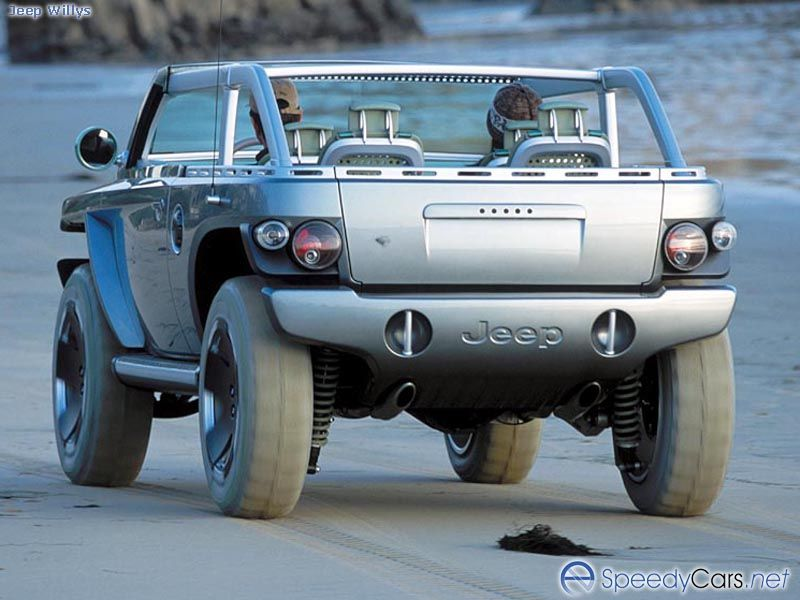
目前加盟企业及加油站已有数家，如：
杭州富阳东海石油有限公司位于杭州市富阳区富春街道迎宾北路58号东海石油大厦，美丽的富春江养育了东海石油人求真务实的企业精神。东海人为自己加出去的每一滴油、每一枪油、每一车油质量负责，目前东海石油已经全面实行国V标号油品，所有油品都经过第三方权威部门检验，一些指标已经远优于国V标准：
公司成立于1993年，注册资金3000万元，地处杭州富阳区富春街道迎宾北路58号，占地10000平方米。公司的东海石油大厦总建筑30000平方米，是两座塔式19层建筑。目前，公司拥有11座加油站（点）、油库码头各一座和10余辆成品油配送专车，安装了全球定位系统和远程实时监控系统，年销售柴油、汽油5万余吨。。
公司的灵桥油库建于1997年，库容1万方。位于杭州市富阳区灵桥镇王家宕村的富春江岸基，距富阳市区6公里。设有500吨级内河船码头一个，从京杭内河船舶配送油品，水陆交通十分便捷。
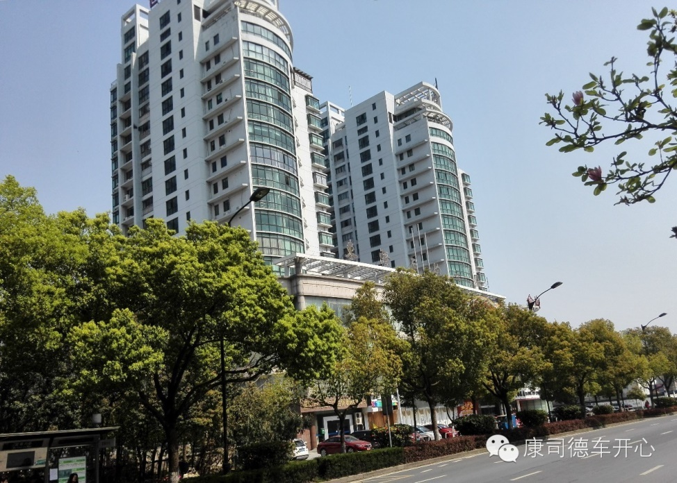
诚信的富阳东海石油人愿为时代发展、社会进步做出自己的贡献！
富阳灵桥加油站：（富阳区灵桥镇王家宕村）
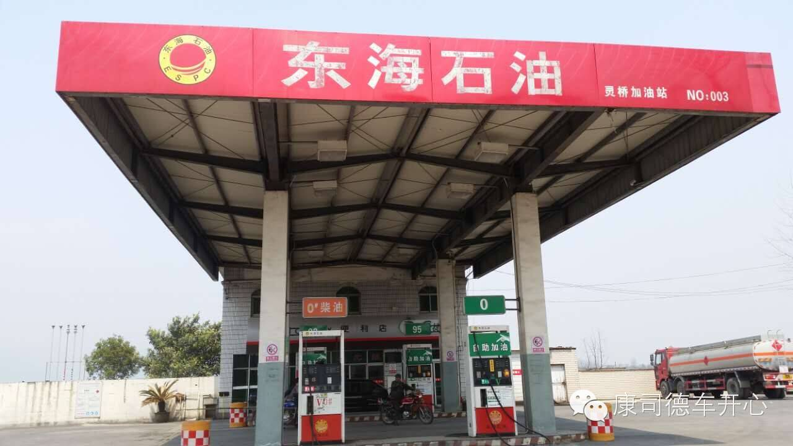
富阳洞桥加油站：（富阳区洞桥镇洞桥村假山头）
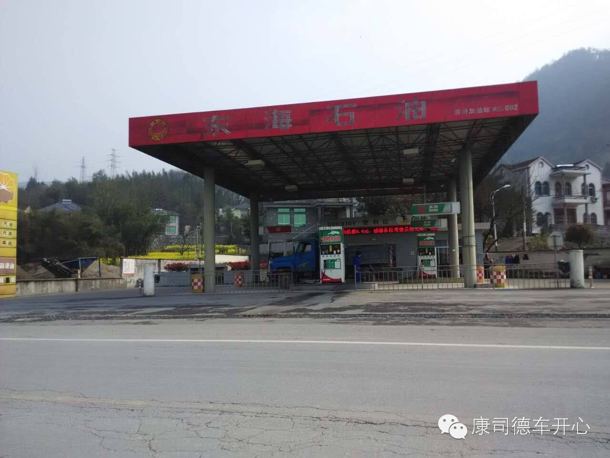
富阳渌渚加油站：（富阳区渌渚镇六渚村下村）
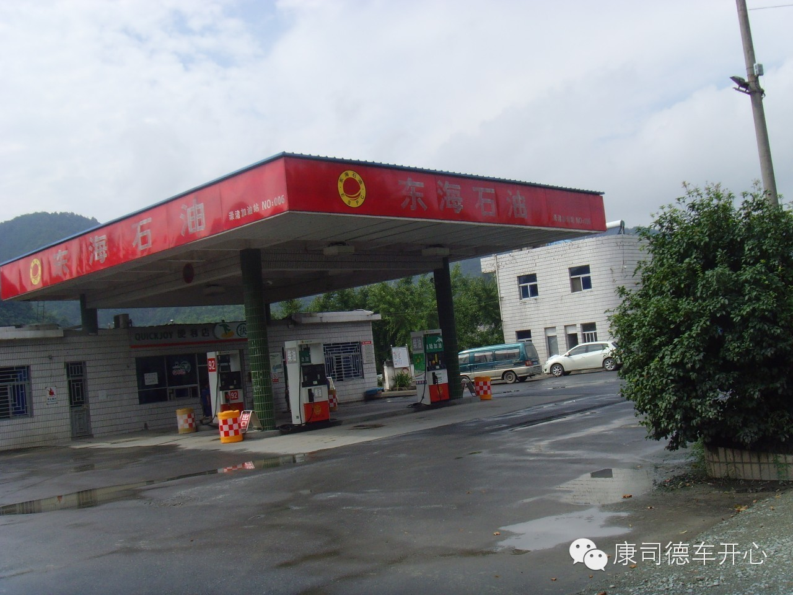
富阳万市加油站：（富阳区万市镇万市村）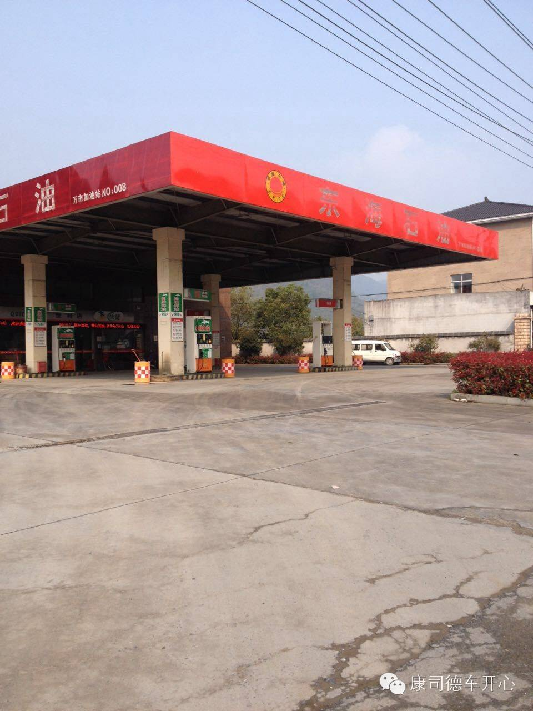
富阳松溪加油站：（金城北路与军堰路交叉口）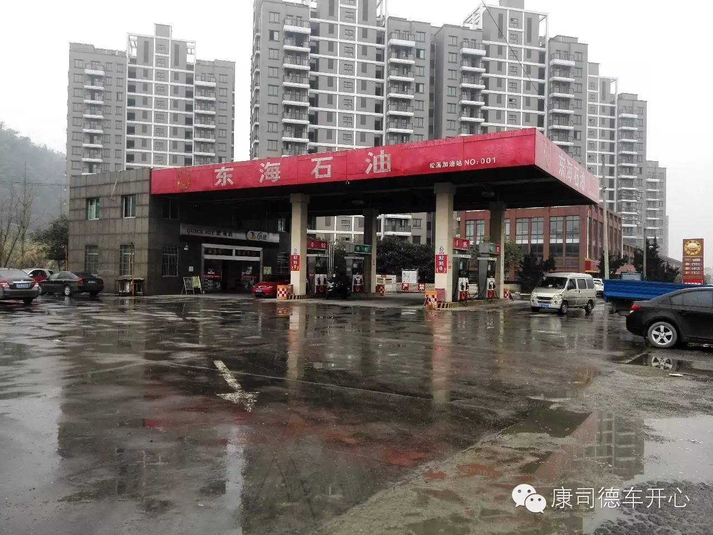
桐庐秀峰加油站：（桐庐县富春江镇秀峰村）
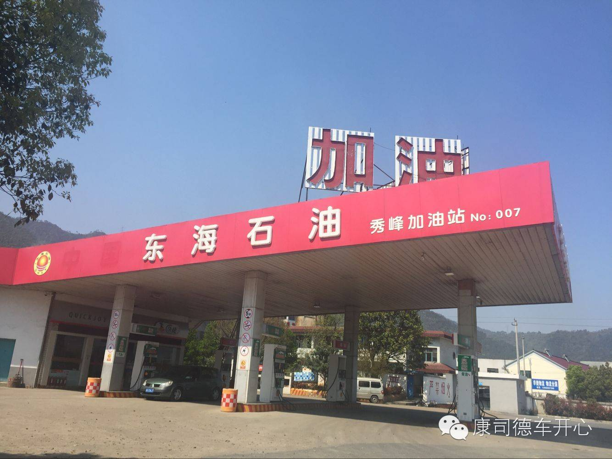
临安潜川镇富能加油站：（临安潜川镇麻车埠村）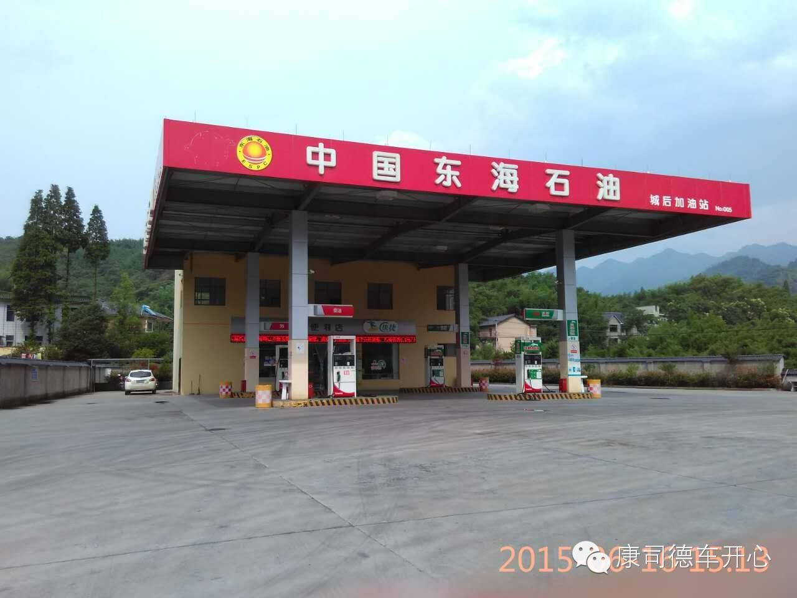
中海石化（浙江）有限公司桐乡灵安加油站（桐乡崇福大道2452号）盛大开业，康司德车开心会员加油优惠力度空前：0.3元/升，进站加油满200，免费洗车一次，送纸巾、矿泉水等优惠不停！
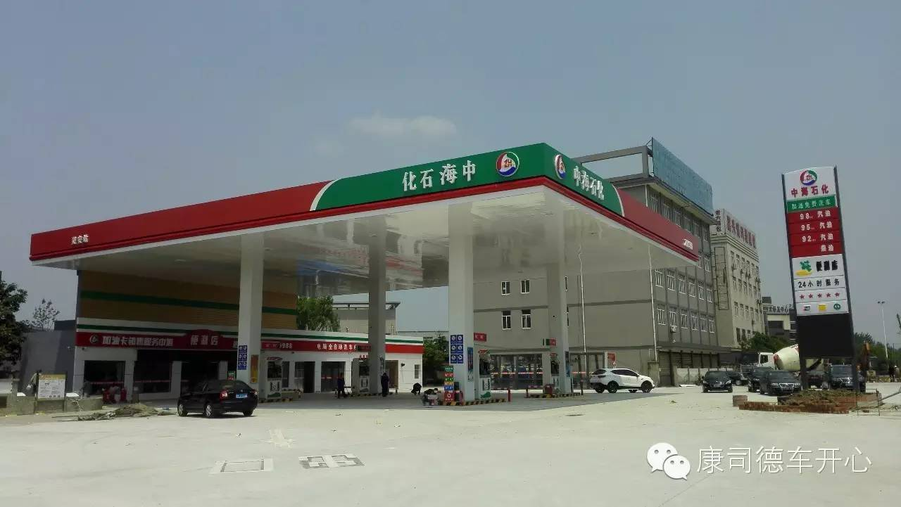
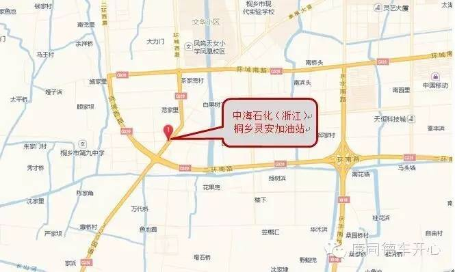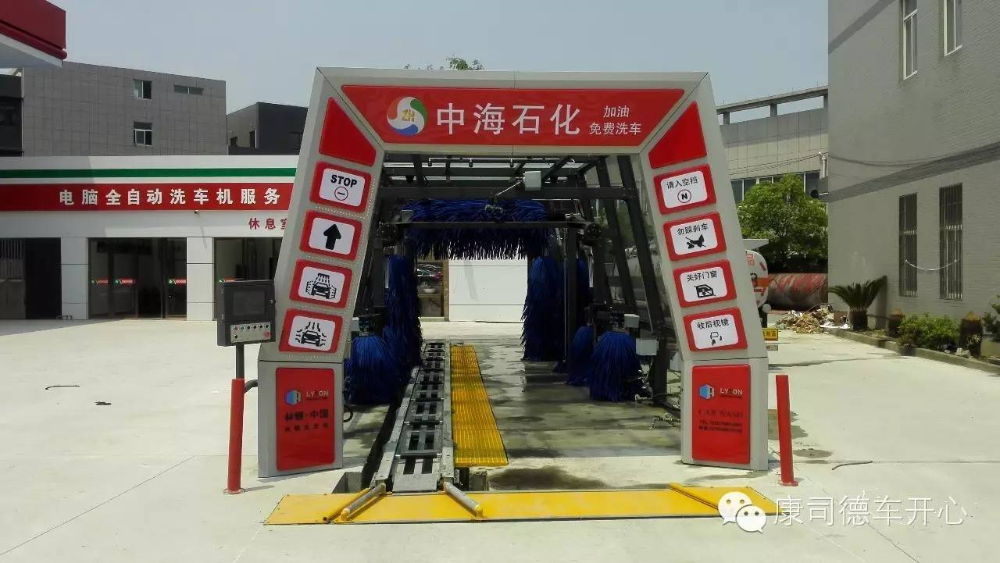
车族百态：
现在买车、用车的人越来越多，已经成了标配三大件之一，但俗话说得好“常在河边站，哪有不湿鞋的”，驾驶证一年就12分，不少人司机上路多少都中招，对于交规的扣分处罚仍是“一脸懵逼”，今天就来给大家汇总下哪些驾驶行为会被扣12分？
有驾照什么车都可以开
现在大部分人考驾照都是C1/C2驾驶证，驾校也几乎都是考这两种驾照为主，日常开车中有很多人都忽略了不同驾照对应准驾车型，以为我会开就ok了，但其实这里面有很多限制，以C牌为例子，C1本准驾车型：小型汽车、微型载客汽车以及轻型、微型载货汽车、轻、小、微型专项作业车、C2、C3、C4车型。但开下面这些就是扣12分行为。
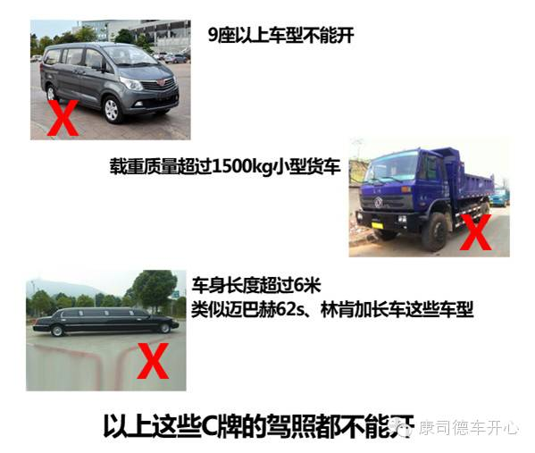
①不是所有的轿车都能开：一些豪华车型长度超过6米（迈巴赫62s、林肯加长车这类）的同样是不能开的；另外考了C2驾驶证的朋友，只能驾驶自动挡准驾车辆，这些情况被逮到那12分就Bye-Bye了；
②不是所有的蓝牌车都能开：国家规定总质量在4.5吨（不含）以下的货车和乘座人数（驾驶员除外）在20人（不含）以下和车身长度在6米（不含）以下的汽车安装蓝牌，所以如果你驾照是C牌，就不能开超过9座的蓝牌车；
③C1不能开摩托：你以为能开汽车就能开摩托，当然没有这么好的事情啦，无论是什么类型摩托，只要与准驾车型不符合的同样是不行的。
我以为有个驾照就是万能，还限制那么多，还扣分……
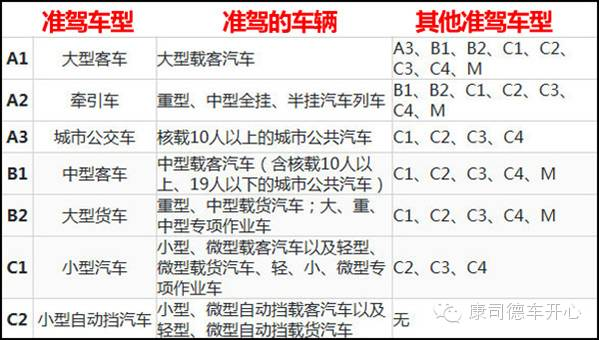
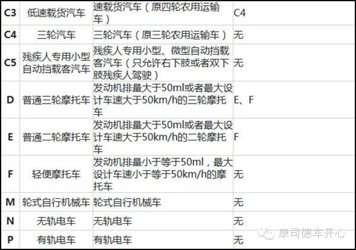
开车不喝酒，喝酒不开车！！！
国人的餐桌上永远少不了酒，而近年关于酒驾的事故屡见不鲜，交警部门对此的处罚也是下狠手，酒后开车是严格禁止的，无论量多量少，而关于处罚也是有明确规定，各位可不要送完12分还把自己送进去了。
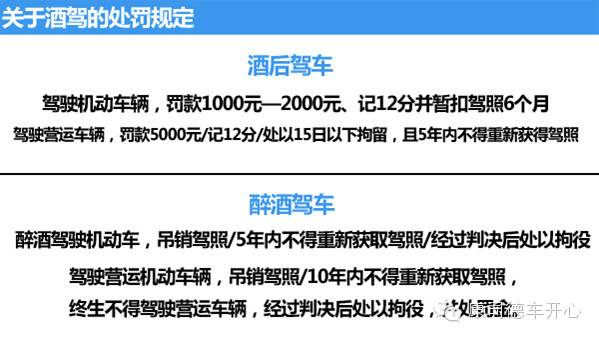
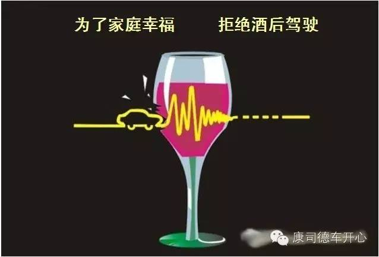
交通事故后逃逸，尚不构成犯罪
这种事故后逃逸的，纯属自己找罪受，无论是对方责任还是你的责任，只要肇事逃逸就会被处以记12分处罚，另外交通事故肇事逃逸并造成人员伤亡的，将依法追究刑事责任，并由公安机关交通管理部门吊销机动车驾驶证，且终生不得重新考取机动车驾驶证。
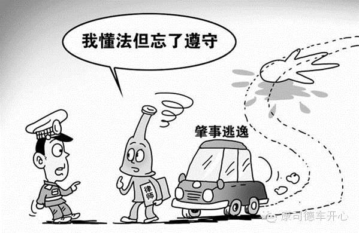
只是超速又没出事故，没事吧~
路这么好走一不小心就超速了，又没违章至于这样吗？
当然不是这样了，超速本身就是违章了，国内交通事故中大部分是由超速造成的，对于超速的处罚我国对于不同车型有明确规定，详见下表：
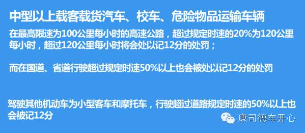
车牌太过个性会怎样？
经常会看到一些车主莫名其妙的收到一些违章扣分，其实这些都是假牌假证搞的鬼，令不少车主被坑。
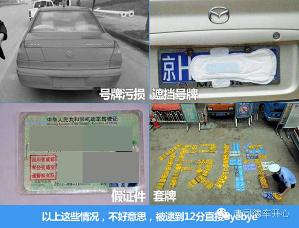
不过车主们注意了，使用伪造、编造的机动车号牌（套牌）、行驶证、驾驶证、校车标牌或使用其他机动车号牌、行驶证的一经查证，将直接扣除12分。那些遮挡号牌、没有悬挂号牌、污损号牌的，道路交通安全管理条例里明确规定了，不按照规定来的同样是扣除12分。另外要提醒雨雪季节时候，在行驶前最好检查一下车牌有没有被遮挡住了，有的话记得擦亮车牌再上路，可别白白的送了12分。
还有哪些行为会被扣12分？
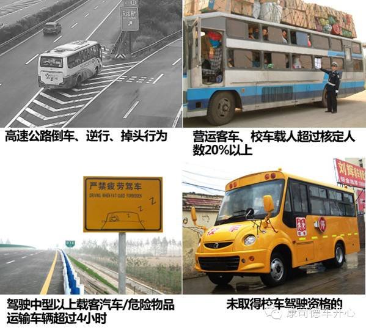
倒车、逆行、停车、超载这些违法行为分分钟都是要人命的，一旦出事后果不敢想象，那就不仅仅是扣除12分那么简单了。
特别提醒
新交通法规定：临时牌照应该粘贴2张，1张粘贴在车内前挡风玻璃的左下角或右下角不影响驾驶人视线的位置，另1张应当粘贴在车内后挡风玻璃左下角。
如果你还不明白应该怎么贴，那就看下面的示范吧，只要保证你的临时牌照是这样贴的，就可以先给你自己“加分”了。
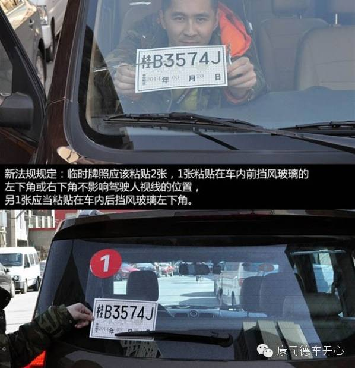
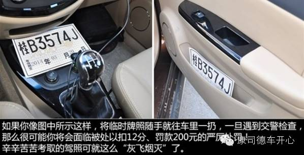
小编也是今天从销售人员处了解到：曾经有位女车主因为在使用临牌行驶期间没有按照规定悬挂临牌，只是将临牌放在了后备箱里，结果被交警拦下，以“未按规定悬挂临时号牌”为由，直接处以扣12分，罚款200元的处罚，这位车主手中的驾照瞬间就“归零”了，直接“回炉”重新学习去了，后果很严重哦。所以在此特别提醒新车主、新司机注意这点。
ICP备案：浙ICP备 16008441号